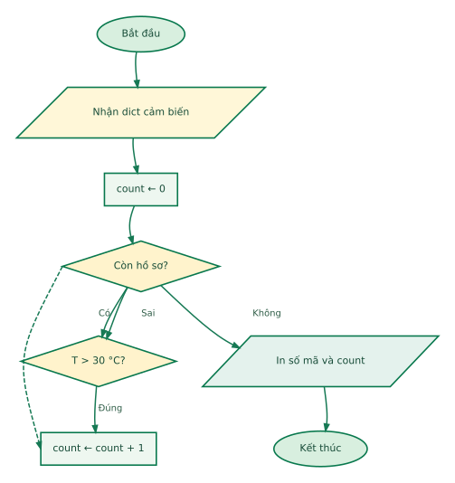

Khóa học / Mô-đun 2 / Bài 08
01 Mục tiêu và kiến thức tiên quyết
- Sử dụng dict để ánh xạ mã cảm biến sang hồ sơ dữ liệu.
- Dùng get(), items() và set() đúng chức năng.
- Xử lý khóa không tồn tại và phân biệt thứ tự chèn với thứ tự đại lượng đo.
Kiến thức tiên quyết: bài trước, kiến thức lập trình tương ứng.
02 Tình huống kỹ thuật
Một hệ đo ghi nhiều cảm biến với mã riêng, đơn vị và giá trị. Sinh viên cần tổ chức dữ liệu sao cho truy cập theo mã, cập nhật và phát hiện trùng mã.
Hồ sơ S1 nhiệt độ 26,5 °C; S2 nhiệt độ 31,2 °C.
Danh sách mã và số cảm biến vượt ngưỡng 30 °C.
03 Kiến thức và thuật ngữ cốt lõi
Từ điển dict
dict lưu cặp khóa–giá trị. Kể từ Python 3.7, thứ tự chèn khóa được bảo đảm trong ngôn ngữ; tuy nhiên thứ tự đó không phải thứ tự thời gian trừ khi ta chủ động tổ chức dữ liệu.
Tìm kiếm có điều kiện
d[k] sinh KeyError khi thiếu khóa; d.get(k, default) cho giá trị mặc định. Khi giá trị None có ý nghĩa riêng, cần dùng “in” để phân biệt thiếu khóa.
Tập hợp set
set không bảo đảm thứ tự và không giữ phần tử trùng; phù hợp đếm số mã khác nhau. Một set không phải cấu trúc thay thế cho danh sách có thời gian.
Thiết kế hồ sơ
Mỗi hồ sơ cần chỉ ra tên đại lượng, đơn vị, thời điểm, giá trị, dải chấp nhận. Có dữ liệu chưa có nghĩa đã đo/hiệu chuẩn đúng.
04 Xây dựng và kiểm tra thuật toán
Trước khi xem chương trình, hãy đọc dữ liệu đầu vào, chọn điều kiện rẽ nhánh hoặc lặp, rồi dự đoán kết quả. Mã giả mô tả ý nghĩa thuật toán; không phải cú pháp Python thực thi được.

Mã giả
Lần vết các bước phân tích
Đây là lần vết các dòng mã giả, không phải trình thông dịch Python. Tự kiểm tra nhánh điều kiện bằng bảng ca kiểm thử ở mục 07.
05 Chương trình Python đã kiểm tra
Đọc mã, dự đoán kết quả và chạy tệp bai_08.py trong thư mục code. Các mã bài 9 trở lên có thể cần dữ liệu đi kèm từ thư mục data.
cam_bien = {
"S1": {"gia_tri": 26.5, "don_vi": "°C"},
"S2": {"gia_tri": 31.2, "don_vi": "°C"},
}
nguong_c = 30.0
so_canh_bao = 0
for ma, ho_so in cam_bien.items():
if ho_so["don_vi"] == "°C" and ho_so["gia_tri"] > nguong_c:
so_canh_bao += 1
ma_duy_nhat = set(cam_bien.keys())
print("So cam bien:", len(ma_duy_nhat))
print("So canh bao:", so_canh_bao)
print("S3:", cam_bien.get("S3", "CHUA CO"))
06 Thử nghiệm tham số có hướng dẫn
Thay đổi đầu vào để kiểm tra trực giác và đối chiếu với kết quả dự đoán. Trình khám phá này được lập trình lại bằng JavaScript theo bài toán minh họa, không phải kết quả chạy mã Python.
07 Thực hành và kiểm thử
Thực hiện các nhiệm vụ theo thứ tự từ có hướng dẫn đến độc lập; ghi lại kết quả thực tế của chương trình và so sánh với kết quả kỳ vọng.
- Bổ sung S3 và kiểm thử get() với S4.
- Dùng set để phát hiện mã lặp trong danh sách bản ghi.
- Bổ sung trường timestamp và giải thích điều gì xảy ra khi chèn trùng khóa.
Bảng kiểm thử bắt buộc
| Ca kiểm thử | Dữ liệu/điều kiện | Kết quả kỳ vọng |
|---|---|---|
| Hai cảm biến | S1=26,5; S2=31,2 | Số cảnh báo=1 |
| Thiếu khóa | S3 | Dùng mặc định CHUA CO |
| Không trùng mã | S1,S2 | Số mã duy nhất=2 |
| Nhiều đơn vị | Có °C và V | Không so sánh chéo đơn vị |
08 Vận dụng vào chuyên ngành
Quản lý danh mục cảm biến nhiệt độ, áp suất nhưng không cộng gộp số đo khác đơn vị.
Quản lý kênh dữ liệu điện áp, tốc độ và nhiệt độ theo mã.
09 Trắc nghiệm và phản hồi
Mỗi câu có bốn phương án A/B/C/D. Chọn một phương án cho mỗi câu rồi nhấn Chấm và giải thích để xem vì sao từng phương án đúng hoặc chưa phù hợp.
Rubric tham khảo (100 điểm)
| Thành phần | Điểm |
|---|---|
| Đặc tả dữ liệu, đơn vị, giả thiết | 20 |
| Mã giả, trình tự thuật toán | 20 |
| Mã Python và tổ chức hàm/dữ liệu | 25 |
| Kiểm thử, đối chiếu, phân tích sai số | 25 |
| Giải thích và đề xuất cải tiến | 10 |
10 Nhật ký học tập và đánh dấu tiến độ
Tiến độ và ghi chép chỉ lưu trong trình duyệt hiện tại; không đồng bộ với hệ thống điểm của trường.
11 Tài liệu tham khảo và nguồn
| Nguồn | Vai trò và phạm vi sử dụng |
|---|---|
| Pythonlearn-09-Dictionaries.pptx | C. Severance, Python for Everybody — Chương 9, từ điển. |
| PythonCoban_UTEHY.pdf | N. V. Hậu và cộng sự, Python cơ bản — các bài nền tảng tương ứng. |
| Python 3 Documentation | Tài liệu chuẩn của ngôn ngữ Python 3. |
Học liệu mới được viết lại theo định hướng sư phạm. Không trích lại nguyên văn hoặc phân phối các slide/sách gốc trong gói website.